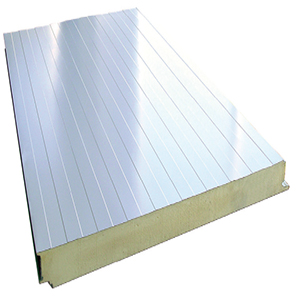

MONTAJES DE PANELES DE TODO TIPO
Panel de Fachada
El fibrocemento es un material compuesto de cemento, fibras de celulosa, minerales y agua, reforzados por una matriz visible. Es el acabado mas convencional y económico para cerramientos de fachada . Se puede colocar tanto en posición vertical como horizontal. Sus dos caras metálicas van perfiladas con un ligero nervado trapezoidal de 0,8mm . Este panel tiene buenas resistencias mecánicas y permite alcanzar longitudes amplias. Su sistema de machihembrado con tornillería oculta,permite acabados limpios y de alto nivel estético, ya que una vez terminada la fachada todas las fijaciones quedan ocultas.
Panel Frigorifico
Cuando usted se dispone a la fabricación, construcción o el montaje de una camara frigorifica, en primer lugar debe de plantearse el acondicionamiento del local que desea refrigerar, para este acondicionamiento, el material por excelencia hoy en día son los paneles frigoríficos, por su alto grado de aislamiento, con este tipo de paneles le ofrecemos la posibilidad de poder configurar completamente a medida de sus necesidades, la superficie que desea refrigerar, sin ningún tipo de limitación en cuanto altura, ancho y largo.
Panel de Cubierta

Panel estudiado para cubiertas inclinadas y paredes. Se caracteriza por un sistema de fijación oculta que demuestra una excelente continuidad entre los paneles: Este panel asegura realizaciones estéticas y duraderas. La chapa externa puede estar hecha en cobre, indicada para edificios residenciales, religiosos y contextos estructurales de prestigio, o en aluminio o inox para sistemas anticorrosión.
Lana de Roca

Panel estudiado para cubiertas inclinadas y paredes. Se caracteriza por un sistema de fijación oculta que demuestra una excelente continuidad entre los paneles: Este panel asegura realizaciones estéticas y duraderas. La chapa externa puede estar hecha en cobre, indicada para edificios residenciales, religiosos y contextos estructurales de prestigio, o en aluminio o inox para sistemas anticorrosión.